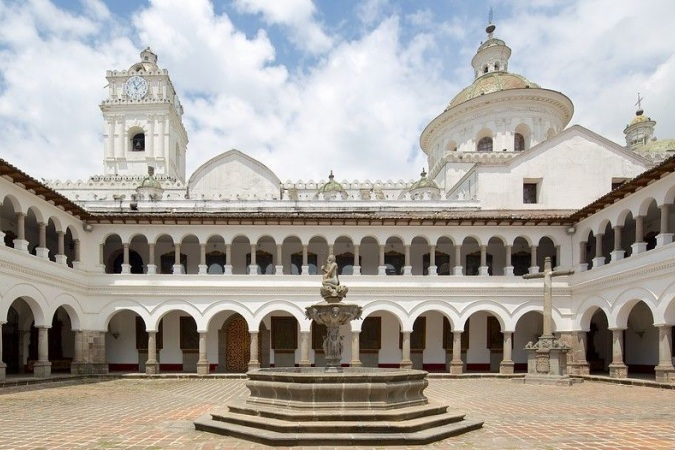
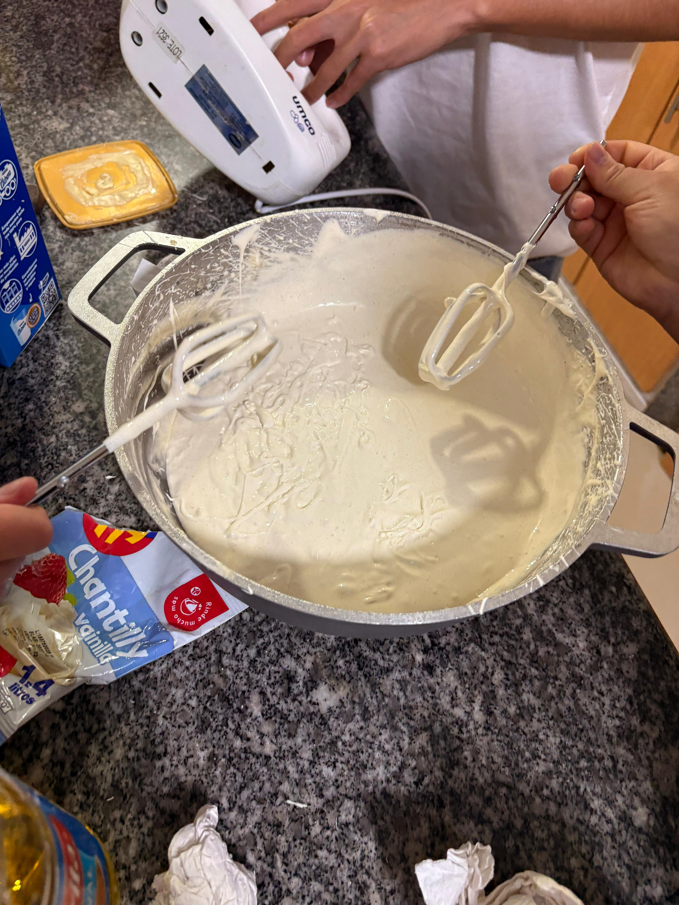

Quienes somos
Bakeshop es la mejor pastelería en el centro histórico contando con diferentes tipos de sabores para ofrecer y con especialidades en épocas festivas, dependiendo de su temática hay un pastel con diseño de la misma. BakeHope está destinado para todo tipo de publico teniendo en cuenta la ayuda a las personas con bajos recursos, cada mes nosotros hacemos una donación de 10 pasteles a personas que estén en situación de calle.
Menú

Pastel de Vainilla
Un pastel clásico, suave y aromático, con un sabor delicado de vainilla que nunca pasa de moda.

Pastel Red Velvet
Un pastel de color rojo vibrante con un sabor único, ligeramente ácido y una cobertura suave de queso crema.
En nuestro menú contamos con una variedad de productos, incluyendo pastelería, cafetería y chocolatería. Descubre el espíritu de la sociedad mercedaria en cada bocado. Horneamos con Esperanza.
Procesos
En BakeHope, cada pastel y cada taza de café cuentan una historia de tradición, sabor y dedicación. Creemos que los mejores sabores nacen de procesos honestos, ingredientes frescos y mucho amor por lo que hacemos. Ingredientes locales, sabor auténtico Seleccionamos cuidadosamente ingredientes frescos y locales de distintas regiones del Ecuador: cacao de Manabí, frutas de la Sierra, café de Loja y azúcar de caña orgánica. Esta elección no solo apoya a pequeños productores, sino que también garantiza un sabor inigualable en cada bocado.